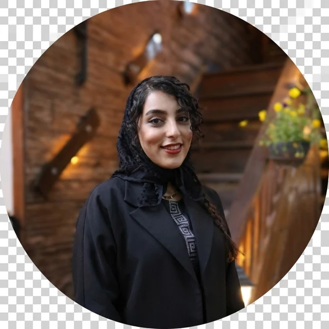

هزارآوا راهنمایی است بر پایهٔ علاقهها و شرایط خودت: چند پرسش کوتاه دربارهٔ موسیقیای که دوست داری، زمان تمرین و سن، شنیدن صدای سازها با انتخاب خودت و یک تمرین ساده ریتم و شنوایی. در پایان، حداکثر سه مسیر شروع و استادهای مرتبط را پیشنهاد میکند.
۱علاقه و شرایط تو
۲شنیدن و ضرب گرفتن
۳سه مسیر پیشنهادی
حدود سه دقیقه · بدون ثبتنام · راهنمایی است، نه تشخیص قطعی استعداد؛ انتخاب نهایی را با استاد و دفتر انجام بده.
نتیاب هزاردستان
قطعهات را بگو، سازت را انتخاب کن.
در کتابخانههای باز نت جستوجو میکنیم و منبع، مجوز و وضعیت دسترسی هر نتیجه را نشانت میدهیم. فقط وقتی فایل واقعاً قابل دانلود و بررسیشده باشد، دکمهٔ دانلود میبینی.
کلاسها
چهار اتاق، چهار جهان صدا
از درگاه که بگذری، هر اتاق زبان خودش را دارد. رشتهها و استادهای هر جهان را ببین و برای شناختن هر ساز، روی نامش بزن.
عکاسی و فیلمبرداری، فتوشاپ، آبرنگ، سیاهقلم و نقاشی کودک؛ برای نگاهی که هر روز دقیقتر میشود.
رشتهها
عکاسی و فیلمبرداری
فتوشاپ
آبرنگ
سیاهقلم
نقاشی کودک
استادهای این اتاق

استاد ریاحیعکاسی، فیلمبرداری، فتوشاپ، آبرنگ
استاد سمیه سلیمانیسیاهقلم، نقاشی کودک
عکس سازها و تصویر کارگاه برای معرفی رشتههاست؛ تصویر کلاسها یا فضای آموزشگاه نیست.
اتاق تمرین
استاد، در تمرینِ خانه هم کنارت است.
بعد از جلسه، استاد میتواند نمونهٔ اجرا، تصویر نت و یادداشتهایش را برای کلاس تو در پرتال بگذارد. ببین تمرین با آنها چه شکلی دارد.
نمونهٔ استاد
مترونوم
تیونر
بازخورد استاد
اتاق تمرینکلاس نمونه
نمایش معرفی
نمونهٔ استاد · درس این هفتهنتهای کشیده با آرشهٔ کامل
۰:۰۰
AB
نمونه فقط با زدن دکمهٔ پخش شنیده میشود.
نت جلسه۲ یادداشت استاد
۱آرشه را تا انتها بکش.
۲اینجا کمی آرامتر.
مترونوم۳۰ تا ۲۴۰ ضرب در دقیقه
تیونرگیتار · سیم پنجم
A2107.0 Hz
کمی سفت کنکمی شل کنکوک است
نمایش؛ میکروفونی روشن نمیشود
اجرای منبرای استاد
0:24ضبط تمرین
ارسال برای استاد
نمایش؛ چیزی ضبط نمیشود
نظر استادروی ثانیهٔ ۰:۱۴ اجرای تو
«از اینجا آرشه را آرامتر بکش تا صدا نلرزد. شروعت خیلی بهتر شده.»
تمرین جلسهٔ بعدنتهای کشیده با آرشهٔ کامل، همراه مترونوم
مثال معرفی؛ نظر واقعی یک استاد نیست
محتوای این بخش نمونه است و به حساب هیچ هنرجویی وصل نیست. نمونهٔ صوتی برای معرفی ساخته شده و صدای استادهای آموزشگاه نیست.
۰۱
صدای جلسه، همراه تو
نمونهای که استاد برای همین درس ضبط کرده، در کلاس تو منتشر میشود. هر وقت خواستی با یک لمس پخشش کن.
۰۲
نت، کنار صدا
تصویر نت جلسه کنار نمونه باز میشود. استاد روی نقطههای مهم علامت میگذارد و برای هر کدام توضیح مینویسد.
۰۳
همان چند میزان، دوباره
بخش سخت را انتخاب کن تا پشتسرهم تکرار شود؛ بدون عقبوجلو کردن دستی.
۰۴
آهستهتر، با همان کوک
سرعت پخش را کم کن تا جزئیات را بشنوی. در مرورگرهایی که پشتیبانی میکنند، زیر و بمی صدا عوض نمیشود.
۰۵
ضرب، زیر انگشت
مترونوم از ۳۰ تا ۲۴۰ ضرب در دقیقه، با ضرب اول مشخص و شمارش پیش از شروع. همینجا امتحانش کن.
۰۶
سفت کن، شل کن، کوک است
تیونر پرتال نت را تشخیص میدهد و برای سیمهای گیتار و ویولن میگوید گوشی را سفت کنی یا شل. صدا روی همان گوشی یا رایانه تحلیل میشود و جایی فرستاده نمیشود.
۰۷
اجرای خودت را بفرست
تمرینت را در پرتال ضبط یا بارگذاری کن و برای استاد بفرست؛ تا سه دقیقه برای هر اجرا.
۰۸
نظر استاد، تمرین بعدی
استاد روی زمان مشخصی از اجرای تو نظر نوشتاری یا صوتی میگذارد و همان نظر به تمرین جلسهٔ بعد تبدیل میشود.
بازخورد جلسه
بازخورد، قدم بعدی را روشن میکند.
«بیشتر تمرین کن» کافی نیست. بعد از هر جلسه، ارزیابی استاد برای همان کلاس در پرتال تو ثبت میشود؛ تا بدانی چه چیزی خوب پیش رفته و جلسهٔ بعد روی چه کار کنی.
۱نقطهٔ قوت
آنچه درست پیش رفت
تا با اطمینان ادامهاش بدهی.
ریتم را در تمام قطعه پیوسته نگه داشتی.
۲قابل بهبود
یک تمرکز روشن
بهجای فهرستی بلند، چیزی که این هفته ارزش کار دارد.
حرکت آرشه را آرام و یکنواخت نگه دار.
۳تمرین تعیینشده
کار این هفته
تمرینی که استاد برای جلسهٔ بعد مشخص میکند، کنار نمونه و نت همان درس.
نتهای کشیده با آرشهٔ کامل؛ اول آرام، بعد با مترونوم.
۴بازخوردهای قبلی
مسیری که پشت سر گذاشتی
ارزیابی جلسههای گذشته کنار هم میمانند تا هر وقت خواستی مرورشان کنی.
جلسهٔ قبلدو جلسه پیشسه جلسه پیش
جملههای داخل گیومه مثالاند؛ ارزیابی هیچ هنرجوی واقعی نیستند.
پرتال هنرجو
هر چیز، سر جای خودش.
برنامه، شهریه، رسید و درخواستها؛ برای هر کلاس جدا و همیشه در دسترس.
چند کلاس، هر کدام جدا
اگر بیش از یک کلاس داری، روز و ساعت، استاد و شهریهٔ هر کلاس جدا نمایش داده میشود.
رسید و وضعیت بررسی
رسید پرداخت را ثبت کن و ببین در انتظار بررسی دفتر است یا تأیید شده.
تغییر روز، ساعت یا استاد
درخواستت را از پرتال بفرست؛ تغییر پس از بررسی و تأیید مدیریت انجام میشود.
انتقاد و پیشنهاد
نظرت دربارهٔ کلاسها و آموزشگاه را مستقیم برای مدیریت بنویس.
نوتکس، باشگاه هنرجویان
امتیازها و پاداشهای قابل استفادهات را در حساب خودت ببین؛ مطابق قوانین باشگاه.
با هزارآوا علاقه و شرایطت را مرور کن و صدای سازها را بشنو. برای انتخاب نهایی و هماهنگی با استاد، با دفتر آموزشگاه صحبت کن.
چطور ثبتنام کنم و پرتال داشته باشم؟
برای زمان، ظرفیت و شهریه با دفتر هماهنگ کن. از «ثبتنام آنلاین» هم میتوانی درخواست ثبتنام بفرستی؛ کلاس و برنامهٔ نهایی پس از تأیید آموزشگاه در حسابت نمایش داده میشود.
برای اتاق تمرین باید برنامهای نصب کنم؟
نه. اتاق تمرین داخل پرتال سایت است و با گوشی و رایانه باز میشود. برای ضبط یا تیونر باید خودت اجازهٔ میکروفون مرورگر را بدهی.
اگر چند کلاس یا چند استاد داشته باشم چه میشود؟
برنامه، شهریه و تمرین هر کلاس جداست. در پرتال، کلاس مربوط را انتخاب میکنی و اطلاعات همان مسیر را میبینی.


 استاد جعفریتار، سهتار، عود
استاد جعفریتار، سهتار، عود استاد رضاییسنتور
استاد رضاییسنتور استاد محسن اکبرینی
استاد محسن اکبرینی استاد علیرضاییتنبک
استاد علیرضاییتنبک استاد کرمیدف
استاد کرمیدف استاد هوشیانیدف
استاد هوشیانیدف